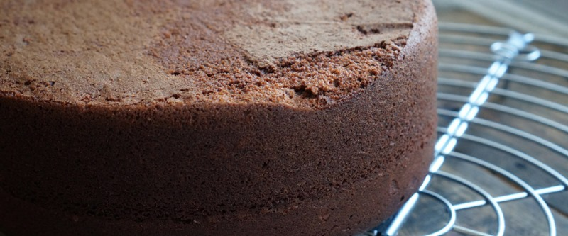

приготовление:
-
60 гр. сливочного масла оставить на столе для размягчения. Прогреть духовку до 175 градусов. Соединить 250 гр. муки, 1,5 ч.л. соды, 1 ч.л. соли, пакетик ванили или ванильного сахара, 300 гр.сахара и 55 гр. чистого какао. Перемешать венчиком, слегка, чтобы хоть как-то сделать вид, что мы серьёзные повара, а рецепт требует навыков;) Следом отправить 2 яйца, мягкое сливочное масло, 60 гр. оливкового масла, 280 мл. молока и 1 ст.л. винного или яблочного 6% уксуса. Теперь всё, что нужно, это хорошо перемешать все ингредиенты миксером.
-
Небольшую (до 25см диаметра) форму смазывать маслом. На дно - пергамент. Выпекайть примерно 50-60 минут. Проверять деревянной шпажкой каждые 5 минут после 50 минут готовки. Готовый корж переложить на решетку или тарелку вверх ногами, снять пергамент, дать остыть. Готовые коржи можно держать в пленке или фольге.